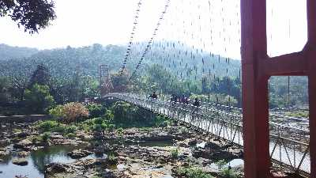

Ernakulam
Ernakulam is a sprawling metropolis that beautifully combines its natural wonders with providing a base for a majority of the State’s business enterprises. Flanked by the Arabian sea, it is easily among the most visited locations in Kerala. It is an extremely important commercial centre but also has a plethora of destinations for tourists to enjoy. The city of Kochi, with its fine natural harbour, is the undisputed crown jewel of the district. From historic locations that transport you to a time when it acted as the commercial hub of the legendary Spice Route to exotic trips on boats where one can simply relax and soak in the weather, Kochi never disappoints. Ernakulam has always epitomized the Malayali spirit of welcoming all who visit it and this tradition continues to this day.
Tourist Attractions

Ezhattumugham
11.8km away from the Cochin International Airport is the small but magnificent village of Ezhattumugham. It is known for its Thumboormozhi dam and oil palm plantation. This village in Ernakulam, Kerala has been promoted as a tourism vilage known as Prakriti Gramam (Nature Village).
Paniyeli Poru
Located on the Periyar River, Paniyeli Poru is a spot in Ernakulam that has been a tourist attraction for years. The natural bottleneck formed by River Periyar has led to an interesting and wild convergence of waters over a rocky terrain.